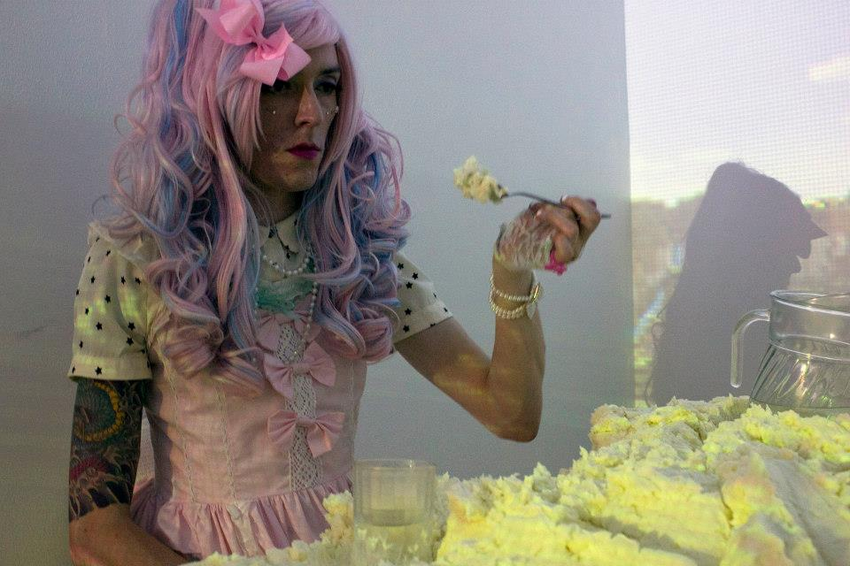
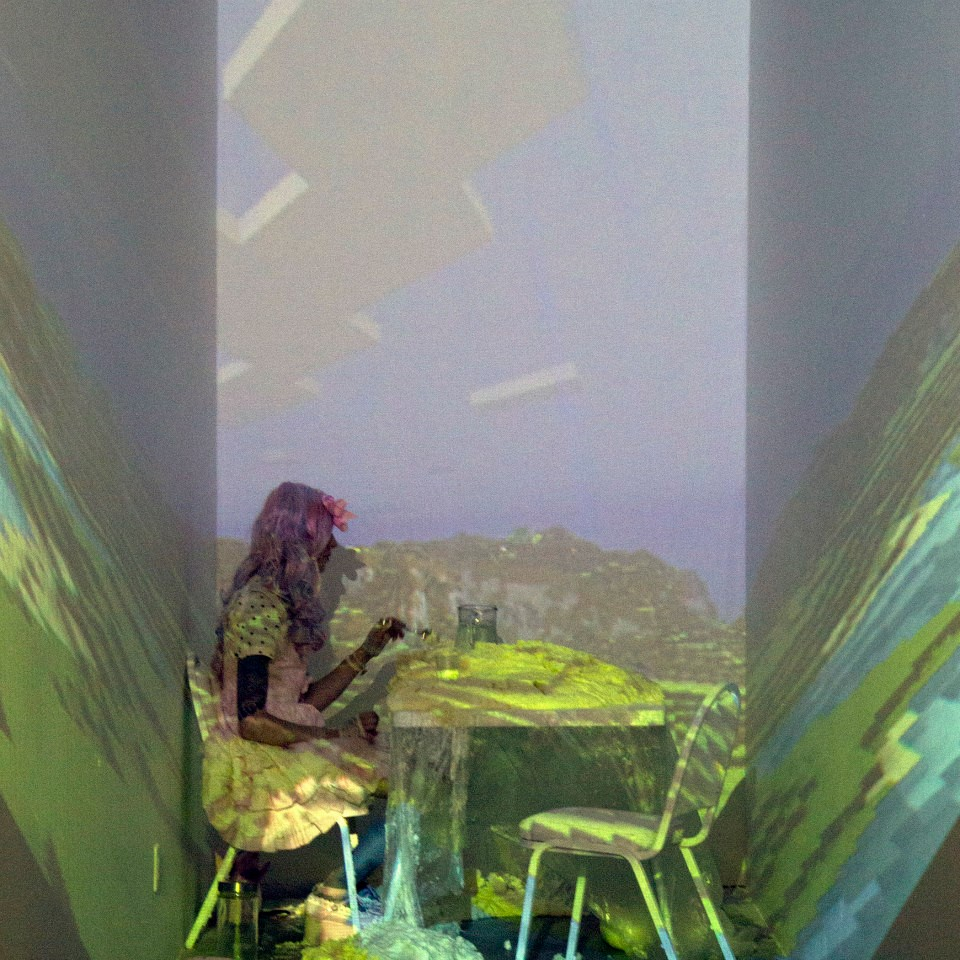
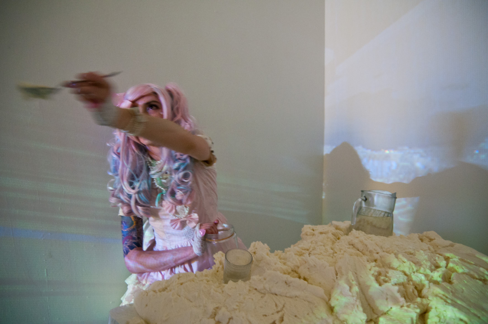
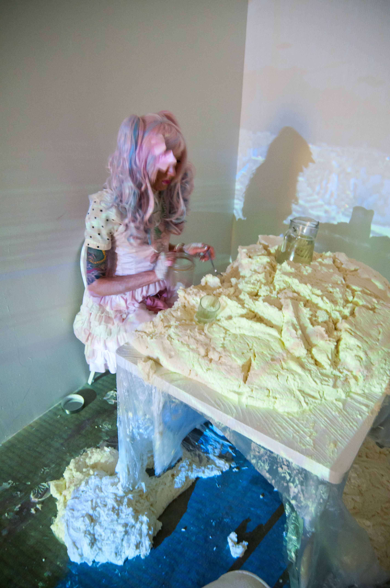

Loli: Rendering

Loli: Rendering is a 3 hr performance with remainder left as installation. 200lbs of hand made frosting, projection of a live instance of a Minecraft landscape, table, chairs, spoon, water glasses, pitcher, large jar. 2013



Rendering, a performative installation, explores the use of fantasy for the purpose of
remaking the self. The process of rendering is an effort at refinement by taking something
whole and disintegrating it: intricately structured animal tissues breakdown into
homogenous lard. Bringing our fantasy selves into meatspace is a form of personal
refinement, but one that carries a strain. The further into the fantastical we reach the
more apparent our real world shortcomings. An existential nausea sets in.
In Rendering I enact one of my fantasy selves, a Sweet Lolita. She is an eternal child
emblematic of an idealized girlhood I could never have had. I am situated in a projected
digital Eden, a virtual environment like many that helped my generation escape the
discomfort of the real. Ensconced in excess I feed upon, and share, an absurd blob of
frosting. This is done in an effort to turn the refinement of the food inward and find
affinity with those who would do the same. The act is revolting but there is alchemy in
the suffering.
Loli is the subject of an essay, 4chan Saves Lives published in 2013 by
Social Malpractice Publishing.